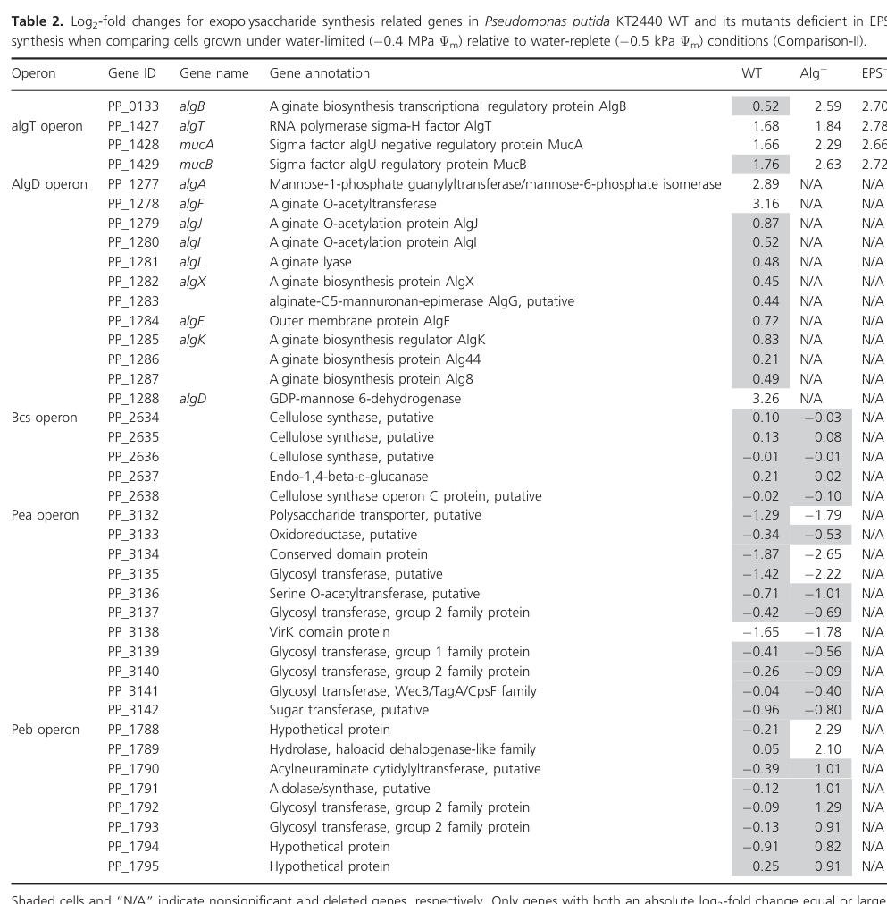

algF encodes a periplasmic alginate biosynthesis protein that acts with AlgI and AlgJ in the alginate O-acetylation machinery.
| GO Term | Evidence | Action | Reason |
|---|---|---|---|
|
GO:0042121
alginic acid biosynthetic process
|
IEA
GO_REF:0000120 |
ACCEPT |
Summary: AlgF should retain the alginic acid biosynthetic process annotation.
Reason: UniProt describes AlgF as part of an AlgI/AlgJ complex that adds acetyl groups to alginate and places it in alginate biosynthesis. The statement is by similarity and UniProt describes AlgF as acting with an inner-membrane complex while localizing the protein to the periplasm.
Supporting Evidence:
file:PSEPK/algF/algF-uniprot.txt
adds acetyl groups at the O-2 and O-3 positions
file:PSEPK/algF/algF-uniprot.txt
PATHWAY: Glycan biosynthesis; alginate biosynthesis
file:PSEPK/algF/algF-goa.tsv
GO:0042121 alginic acid biosynthetic process
file:PSEPK/algF/algF-deep-research-falcon.md
an **AlgI/AlgJ/AlgF acetylase system** responsible for **partial O-acetylation of polymeric mannuronic acid residues**, specifically at the **O-2 and/or O-3 positions**, as a **post-polymerization modification** step in alginate biosynthesis
file:PSEPK/algF/algF-deep-research-falcon.md
In KT2440, algF (PP_1278) is listed in the **AlgD operon** alongside other alginate biosynthesis/export/modification genes
|
|
GO:0042597
periplasmic space
|
IEA
GO_REF:0000044 |
KEEP AS NON CORE |
Summary: The periplasmic-space annotation is correct for AlgF.
Reason: AlgF is a periplasmic component of the alginate modification machinery; the location is useful but secondary to the alginate biosynthetic role.
Supporting Evidence:
file:PSEPK/algF/algF-uniprot.txt
SUBCELLULAR LOCATION: Periplasm
file:PSEPK/algF/algF-goa.tsv
GO:0042597 periplasmic space
file:PSEPK/algF/algF-deep-research-falcon.md
The same pathway model describes **AlgF as a periplasmic protein**, with AlgI and AlgJ being membrane-associated components
file:PSEPK/algF/algF-deep-research-falcon.md
Acetylation and epimerization steps take place in the periplasm under the concerted action of AlgI, AlgJ and AlgF for O-acetylation
|
Q: Which component of the AlgF/AlgI/AlgJ machinery carries the catalytic acetyltransferase step in KT2440?
Experiment: Compare alginate acetylation profiles in algF, algI, and algJ knockout strains and complement each deletion with tagged proteins.
Type: alginate modification profiling
The research report should be a detailed narrative explaining the function, biological processes, and localization of the gene product. Citations should be given for all claims.
You should prioritize authoritative reviews and primary scientific literature when conducting research. You can supplement
this with annotations you find in gene/protein databases, but these can be outdated or inaccurate.
We are specifically interested in the primary function of the gene - for enzymes, what reaction is catalyzed, and what is the substrate specificity? For transporters, what is the substrate? For structural proteins or adapters, what is the broader structural role? For signaling molecules, what is the role in the pathway.
We are interested in where in or outside the cell the gene product carries out its function.
We are also interested in the signaling or biochemical pathways in which the gene functions. We are less interested in broad pleiotropic effects, except where these elucidate the precise role.
Include evidence where possible. We are interested in both experimental evidence as well as inference from structure, evolution, or bioinformatic analysis. Precise studies should be prioritized over high-throughput, where available.
The requested target is Alginate biosynthesis protein AlgF (precursor) encoded by algF, locus PP_1278, in Pseudomonas putida strain KT2440 (UniProt Q88ND4). A KT2440 transcriptomics study explicitly lists PP_1278 = algF within the AlgD operon and annotates it as an alginate O-acetylation gene (“Alginate O-acetyltransferase”), confirming that the literature being summarized here is aligned with the specified protein identity and organism context (gulez2014colonymorphologyand pages 6-8).
Alginate is an exopolysaccharide (EPS) produced by various Pseudomonas species and is widely associated with hydrated biofilms and stress tolerance in environmental and clinical contexts (gulez2014colonymorphologyand pages 6-8, hulen2023thegdpmannosedehydrogenase pages 1-3). In P. putida KT2440 specifically, alginate is described as an important EPS under water limitation, and alginate-pathway genes show coordinated induction under water-limited conditions (gulez2014colonymorphologyand pages 6-8).
Across pseudomonads, AlgF is part of the alginate O-acetylation machinery, working with AlgI and AlgJ.
Importantly, in the retrieved KT2440-specific literature, AlgF’s role is supported directly by operon context and condition-dependent expression, while the detailed mechanistic/biochemical function and localization are inferred from conserved pseudomonad models (gulez2014colonymorphologyand pages 6-8, muhammadi2007geneticsofbacterial pages 5-7).
In KT2440, algF (PP_1278) is listed in the AlgD operon alongside other alginate biosynthesis/export/modification genes: algA (PP_1277), algJ (PP_1279), algI (PP_1280), algL (PP_1281), algX (PP_1282), algG (PP_1283), algE (PP_1284), algK (PP_1285), alg44 (PP_1286), alg8 (PP_1287), and algD (PP_1288) (gulez2014colonymorphologyand pages 6-8). This operon placement strongly supports AlgF’s primary biological role as an alginate-envelope biogenesis/modification component rather than a general metabolic enzyme (gulez2014colonymorphologyand pages 6-8).
A controlled matric-potential study in KT2440 quantified expression changes between water-limited (−0.4 MPa) and water-replete conditions. Under water limitation, algF (PP_1278) was strongly upregulated in wild-type KT2440 (log2 fold-change 3.16), consistent with activation of the alginate program (gulez2014colonymorphologyand pages 6-8). In alginate-deficient and EPS-deficient mutants (constructed by deleting alginate synthesis capacity), algF expression was not detected (N/A), consistent with loss of alginate-operon expression in those mutants (gulez2014colonymorphologyand pages 6-8).
An authoritative alginate genetics review states that algF encodes a periplasmic protein and that AlgF functions together with AlgI and AlgJ as an acetylation system, placing activity at the cell envelope (inner membrane/periplasm) rather than in the cytosol (muhammadi2007geneticsofbacterial pages 5-7). While this evidence is not KT2440-specific, the KT2440 operon context and co-expression with other envelope-localized alginate genes (e.g., algE, algK) are consistent with the conserved envelope-localized biosynthesis/export model (gulez2014colonymorphologyand pages 6-8).
AlgF is not described as a stand-alone cytosolic enzyme with a classic small-molecule substrate. Instead, the dominant model is that AlgF contributes to a multi-protein acetylation machinery that modifies the alginate polymer (polymeric mannuronic acid residues) via O-acetylation at O-2/O-3 (muhammadi2007geneticsofbacterial pages 5-7). Thus, the most appropriate “substrate specificity” statement for functional annotation is:
Substrate: polymeric mannuronic acid residues within the alginate chain (polymannuronate segments)
Reaction type: partial O-acetylation at O-2 and/or O-3 positions
Cellular location: periplasm / inner-membrane-associated envelope compartment
(muhammadi2007geneticsofbacterial pages 5-7).
A 2023 review of alginate biosynthesis in P. aeruginosa (a major reference organism for the pathway) explicitly states that “Acetylation and epimerization steps take place in the periplasm under the concerted action of AlgI, AlgJ and AlgF for O-acetylation and AlgG to epimerization” (published Nov 2023; URL: https://doi.org/10.3390/antibiotics12121649) (hulen2023thegdpmannosedehydrogenase pages 1-3). Although this is not KT2440-specific, it is a recent authoritative statement that the field still treats AlgF as a periplasmic O-acetylation component.
A 2024 chemostat study in P. putida KT2440 reports that under fast dilution rates, KT2440 forms aggregates and biofilms, and notes that KT2440 can form biofilms via synthesis/export of polymers “including alginate” (published Aug 2024; URL: https://doi.org/10.1128/msystems.00770-24) (peoples2024physiologyfastand pages 9-12, peoples2024physiologyfastand pages 1-2). Quantitatively, the study contrasts dilution rates 0.12 h−1 and 0.48 h−1, with aggregation prominent at the faster regime (peoples2024physiologyfastand pages 4-6, peoples2024physiologyfastand pages 1-2).
A 2024 applied fermentation study engineered P. putida (strain PCL1760; not KT2440) by deleting algA (involved in alginate accumulation) along with motility/adhesion genes, aiming to reduce biofilm formation in bioreactors (published Nov 2024; URL: https://doi.org/10.3390/fermentation10120606) (frolov2024constructionofthe pages 1-2). The engineered strain showed ~40% lower biofilm formation after 72 h, and achieved higher cell densities in small-volume bioreactors (e.g., 1.39×10^10 CFU/mL vs 6.4×10^9 CFU/mL in rich medium; and 6.11×10^9 CFU/mL vs 1.36×10^9 CFU/mL in mineral medium) (frolov2024constructionofthe pages 1-2, frolov2024constructionofthe pages 8-10). This illustrates a practical industry-relevant theme: alginate-pathway activity can be undesirable in fermentation due to biofilm/foam, motivating genetic strategies that reduce alginate accumulation.
Although this study does not target algF directly, it underscores the applied importance of the alginate pathway that algF belongs to, and provides quantitative, real-world bioreactor metrics (frolov2024constructionofthe pages 1-2, frolov2024constructionofthe pages 8-10).
Most defensible primary function (high confidence): AlgF (PP_1278/Q88ND4) is an alginate biosynthesis accessory protein involved in alginate O-acetylation as part of a cell-envelope (periplasm/inner-membrane-associated) modification machinery together with AlgI and AlgJ (gulez2014colonymorphologyand pages 6-8, muhammadi2007geneticsofbacterial pages 5-7, hulen2023thegdpmannosedehydrogenase pages 1-3).
Biological process/pathway placement: AlgF functions within the AlgD operon alginate biosynthesis/export/modification pathway, and is co-regulated with core alginate genes during water limitation in KT2440 (gulez2014colonymorphologyand pages 6-8).
Subcellular localization (best-supported model; inferred for KT2440): Periplasmic component of the acetylation machinery; overall pathway is an envelope-localized, multi-protein system modifying/exporting a polymer (muhammadi2007geneticsofbacterial pages 5-7).
Major evidence gap: Within the retrieved corpus, there is no direct KT2440-specific biochemical assay of PP_1278 activity and no KT2440-specific localization experiment for AlgF. Thus, mechanistic statements are strongest at the level of conserved pseudomonad pathway models and KT2440 operon/expression context (gulez2014colonymorphologyand pages 6-8, muhammadi2007geneticsofbacterial pages 5-7).
The following table consolidates claims, sources, publication dates, URLs, and evidence strength for KT2440 algF functional annotation.
| Claim/Aspect | Key finding | Organism/strain | Source (author year) | Publication date/month | URL | Evidence strength/notes | Citation ID |
|---|---|---|---|---|---|---|---|
| Gene identity / operon context | algF = PP_1278 in the AlgD operon of Pseudomonas putida KT2440; listed between algA (PP_1277) and algJ (PP_1279) and annotated as Alginate O-acetyltransferase. This matches the target UniProt entry Q88ND4 for AlgF family protein in KT2440. | Pseudomonas putida KT2440 | Gulez et al. 2014 | 2014 Jun | https://doi.org/10.1002/mbo3.180 | Direct strain-specific evidence from KT2440 transcriptomics table; strongest evidence for correct gene identification in the requested organism. | (gulez2014colonymorphologyand pages 6-8) |
| Biochemical role | AlgF is associated with alginate O-acetylation; reviews place AlgI, AlgJ, and AlgF together in the machinery that modifies alginate. | Mainly Pseudomonas spp.; pathway model derived largely from P. aeruginosa and related species | Muhammadi & Ahmed 2007 | 2007 May | https://doi.org/10.2174/138920207780833810 | Indirect for KT2440 but authoritative pathway review; supports assignment of AlgF as an acetylation-related protein/family member. | (muhammadi2007geneticsofbacterial pages 2-3) |
| Localization | AlgF is described as a periplasmic protein; in the canonical model, AlgI is a multispanning inner-membrane protein, AlgJ a membrane-associated protein, and AlgF a periplasmic component of the O-acetylation system. | General Pseudomonas alginate pathway | Muhammadi & Ahmed 2007 | 2007 May | https://doi.org/10.2174/138920207780833810 | Indirect inference for PP_1278/Q88ND4; no KT2440-specific localization experiment found in retrieved sources, but this is the standard literature model. | (muhammadi2007geneticsofbacterial pages 5-7) |
| Pathway step | O-acetylation is a post-polymerization modification of alginate, acting on polymeric mannuronic acid residues at O-2 and/or O-3 after polymer formation/export begins. | General Pseudomonas alginate pathway | Muhammadi & Ahmed 2007 | 2007 May | https://doi.org/10.2174/138920207780833810 | Indirect for KT2440; useful for functional annotation because it defines the precise biosynthetic stage in which AlgF acts. | (muhammadi2007geneticsofbacterial pages 5-7) |
| Current understanding / recent review | A recent review states that “Acetylation and epimerization steps take place in the periplasm under the concerted action of AlgI, AlgJ and AlgF for O-acetylation and AlgG for epimerization.” | Pseudomonas aeruginosa pathway review, broadly relevant to pseudomonal alginate systems | Hulen 2023 | 2023 Nov | https://doi.org/10.3390/antibiotics12121649 | Recent authoritative secondary source; not KT2440-specific, but confirms that the field still views AlgF as part of the periplasmic O-acetylation machinery. | (hulen2023thegdpmannosedehydrogenase pages 1-3) |
| Additional pathway context | AlgI/AlgJ/AlgF (often with AlgX) are needed to O-acetylate mannuronic acid residues, while AlgG epimerizes residues and AlgK/AlgE participate in export-associated complexes. | Engineered Pseudomonas fluorescens SBW25 derivative | Ertesvåg et al. 2017 | 2017 Jan | https://doi.org/10.1186/s12864-016-3467-7 | Comparative evidence from another pseudomonad; supports conserved functional assignment of AlgF-family proteins in alginate biosynthesis/export-modification systems. | (ertesvag2017identificationofgenes pages 1-2) |
| Regulation / condition-specific expression | In KT2440 under water-limited conditions (−0.4 MPa vs water-replete), algF expression increased strongly (log2 fold change 3.16) in wild type, whereas expression was not detected in alginate-deficient and EPS-deficient mutants lacking alginate synthesis capacity. | Pseudomonas putida KT2440 | Gulez et al. 2014 | 2014 Jun | https://doi.org/10.1002/mbo3.180 | Direct quantitative strain-specific evidence linking algF to alginate-associated stress response and EPS physiology. | (gulez2014colonymorphologyand pages 6-8, gulez2014colonymorphologyand media e22076d1) |
| Biological process relevance | The KT2440 study supports alginate as the primary EPS under water limitation, placing algF induction within a broader dehydration-adaptation response. | Pseudomonas putida KT2440 | Gulez et al. 2014 | 2014 Jun | https://doi.org/10.1002/mbo3.180 | Direct organism-specific physiological context; does not isolate AlgF biochemistry, but strengthens annotation of algF as part of the water-stress alginate program. | (gulez2014colonymorphologyand pages 6-8) |
| Evidence type / confidence summary | For Q88ND4/PP_1278, the best direct evidence is operon placement and stress-responsive expression in KT2440; biochemical function and localization are supported mainly by cross-species pseudomonal literature and reviews, not by a dedicated KT2440 biochemical study in the retrieved corpus. | Pseudomonas putida KT2440 plus comparative pseudomonads | Synthesized from retrieved sources | 2007–2023 | https://doi.org/10.1002/mbo3.180 ; https://doi.org/10.2174/138920207780833810 ; https://doi.org/10.3390/antibiotics12121649 ; https://doi.org/10.1186/s12864-016-3467-7 | Important caveat for annotation: function is high-confidence by homology/pathway conservation, but direct enzymology for PP_1278 specifically appears limited in the retrieved literature. | (gulez2014colonymorphologyand pages 6-8, muhammadi2007geneticsofbacterial pages 5-7, ertesvag2017identificationofgenes pages 1-2, hulen2023thegdpmannosedehydrogenase pages 1-3) |
Table: This table summarizes the most relevant functional annotation evidence for Pseudomonas putida KT2440 algF (PP_1278; UniProt Q88ND4), including direct strain-specific data and cross-species pathway evidence. It helps distinguish what is experimentally shown in KT2440 from what is inferred from broader pseudomonal alginate biosynthesis literature.
The KT2440 Table 2 and interaction-network figure extracted from Gulez et al. (2014) visually document that algF (PP_1278) is part of the AlgD operon and is strongly induced under water limitation (gulez2014colonymorphologyand media e22076d1, gulez2014colonymorphologyand media 8a64e7b2).
References
(gulez2014colonymorphologyand pages 6-8): Gamze Gulez, Ali Altıntaş, Mustafa Fazli, Arnaud Dechesne, Christopher T. Workman, Tim Tolker‐Nielsen, and Barth F. Smets. Colony morphology and transcriptome profiling of pseudomonas putida kt2440 and its mutants deficient in alginate or all eps synthesis under controlled matric potentials. MicrobiologyOpen, 3:457-469, Jun 2014. URL: https://doi.org/10.1002/mbo3.180, doi:10.1002/mbo3.180. This article has 33 citations and is from a peer-reviewed journal.
(hulen2023thegdpmannosedehydrogenase pages 1-3): Christian Hulen. The gdp-mannose dehydrogenase of pseudomonas aeruginosa: an old and new target to fight against antibiotics resistance of mucoid strains. Antibiotics, 12:1649, Nov 2023. URL: https://doi.org/10.3390/antibiotics12121649, doi:10.3390/antibiotics12121649. This article has 9 citations.
(muhammadi2007geneticsofbacterial pages 5-7): Muhammadi and Nuzhat Ahmed. Genetics of bacterial alginate: alginate genes distribution, organization and biosynthesis in bacteria. Current Genomics, 8:191-202, May 2007. URL: https://doi.org/10.2174/138920207780833810, doi:10.2174/138920207780833810. This article has 79 citations and is from a peer-reviewed journal.
(peoples2024physiologyfastand pages 9-12): Logan M. Peoples, Jana Isanta-Navarro, Benedicta Bras, Brian K. Hand, Frank Rosenzweig, James J. Elser, and Matthew J. Church. Physiology, fast and slow: bacterial response to variable resource stoichiometry and dilution rate. Aug 2024. URL: https://doi.org/10.1128/msystems.00770-24, doi:10.1128/msystems.00770-24. This article has 0 citations and is from a peer-reviewed journal.
(peoples2024physiologyfastand pages 1-2): Logan M. Peoples, Jana Isanta-Navarro, Benedicta Bras, Brian K. Hand, Frank Rosenzweig, James J. Elser, and Matthew J. Church. Physiology, fast and slow: bacterial response to variable resource stoichiometry and dilution rate. Aug 2024. URL: https://doi.org/10.1128/msystems.00770-24, doi:10.1128/msystems.00770-24. This article has 0 citations and is from a peer-reviewed journal.
(peoples2024physiologyfastand pages 4-6): Logan M. Peoples, Jana Isanta-Navarro, Benedicta Bras, Brian K. Hand, Frank Rosenzweig, James J. Elser, and Matthew J. Church. Physiology, fast and slow: bacterial response to variable resource stoichiometry and dilution rate. Aug 2024. URL: https://doi.org/10.1128/msystems.00770-24, doi:10.1128/msystems.00770-24. This article has 0 citations and is from a peer-reviewed journal.
(frolov2024constructionofthe pages 1-2): Mikhail Frolov, Galim Alimzhanovich Kungurov, Emil Elmirovich Valiakhmetov, Artur Sergeyevich Gogov, Natalia Viktorovna Trachtmann, and Shamil Zavdatovich Validov. Construction of the pseudomonas putida strain with low motility and reduced biofilm formation for application in fermentation. Fermentation, 10:606, Nov 2024. URL: https://doi.org/10.3390/fermentation10120606, doi:10.3390/fermentation10120606. This article has 2 citations.
(frolov2024constructionofthe pages 8-10): Mikhail Frolov, Galim Alimzhanovich Kungurov, Emil Elmirovich Valiakhmetov, Artur Sergeyevich Gogov, Natalia Viktorovna Trachtmann, and Shamil Zavdatovich Validov. Construction of the pseudomonas putida strain with low motility and reduced biofilm formation for application in fermentation. Fermentation, 10:606, Nov 2024. URL: https://doi.org/10.3390/fermentation10120606, doi:10.3390/fermentation10120606. This article has 2 citations.
(gulez2014colonymorphologyand media e22076d1): Gamze Gulez, Ali Altıntaş, Mustafa Fazli, Arnaud Dechesne, Christopher T. Workman, Tim Tolker‐Nielsen, and Barth F. Smets. Colony morphology and transcriptome profiling of pseudomonas putida kt2440 and its mutants deficient in alginate or all eps synthesis under controlled matric potentials. MicrobiologyOpen, 3:457-469, Jun 2014. URL: https://doi.org/10.1002/mbo3.180, doi:10.1002/mbo3.180. This article has 33 citations and is from a peer-reviewed journal.
(peoples2024physiologyfastand pages 2-4): Logan M. Peoples, Jana Isanta-Navarro, Benedicta Bras, Brian K. Hand, Frank Rosenzweig, James J. Elser, and Matthew J. Church. Physiology, fast and slow: bacterial response to variable resource stoichiometry and dilution rate. Aug 2024. URL: https://doi.org/10.1128/msystems.00770-24, doi:10.1128/msystems.00770-24. This article has 0 citations and is from a peer-reviewed journal.
(muhammadi2007geneticsofbacterial pages 2-3): Muhammadi and Nuzhat Ahmed. Genetics of bacterial alginate: alginate genes distribution, organization and biosynthesis in bacteria. Current Genomics, 8:191-202, May 2007. URL: https://doi.org/10.2174/138920207780833810, doi:10.2174/138920207780833810. This article has 79 citations and is from a peer-reviewed journal.
(ertesvag2017identificationofgenes pages 1-2): Helga Ertesvåg, Håvard Sletta, Mona Senneset, Yi-Qian Sun, Geir Klinkenberg, Therese Aursand Konradsen, Trond E. Ellingsen, and Svein Valla. Identification of genes affecting alginate biosynthesis in pseudomonas fluorescens by screening a transposon insertion library. BMC Genomics, Jan 2017. URL: https://doi.org/10.1186/s12864-016-3467-7, doi:10.1186/s12864-016-3467-7. This article has 34 citations and is from a peer-reviewed journal.
(gulez2014colonymorphologyand media 8a64e7b2): Gamze Gulez, Ali Altıntaş, Mustafa Fazli, Arnaud Dechesne, Christopher T. Workman, Tim Tolker‐Nielsen, and Barth F. Smets. Colony morphology and transcriptome profiling of pseudomonas putida kt2440 and its mutants deficient in alginate or all eps synthesis under controlled matric potentials. MicrobiologyOpen, 3:457-469, Jun 2014. URL: https://doi.org/10.1002/mbo3.180, doi:10.1002/mbo3.180. This article has 33 citations and is from a peer-reviewed journal.

id: Q88ND4
gene_symbol: algF
product_type: PROTEIN
status: DRAFT
taxon:
id: NCBITaxon:160488
label: Pseudomonas putida (strain ATCC 47054 / DSM 6125 / CFBP 8728 / NCIMB 11950 / KT2440)
description: algF encodes a periplasmic alginate biosynthesis protein that acts with AlgI and AlgJ in the alginate O-acetylation
machinery.
existing_annotations:
- term:
id: GO:0042121
label: alginic acid biosynthetic process
evidence_type: IEA
original_reference_id: GO_REF:0000120
review:
summary: AlgF should retain the alginic acid biosynthetic process annotation.
action: ACCEPT
reason: UniProt describes AlgF as part of an AlgI/AlgJ complex that adds acetyl groups to alginate and places it in alginate
biosynthesis. The statement is by similarity and UniProt describes AlgF as acting with an inner-membrane complex while
localizing the protein to the periplasm.
supported_by:
- reference_id: file:PSEPK/algF/algF-uniprot.txt
supporting_text: adds acetyl groups at the O-2 and O-3 positions
- reference_id: file:PSEPK/algF/algF-uniprot.txt
supporting_text: 'PATHWAY: Glycan biosynthesis; alginate biosynthesis'
- reference_id: file:PSEPK/algF/algF-goa.tsv
supporting_text: "GO:0042121\talginic acid biosynthetic process"
- reference_id: file:PSEPK/algF/algF-deep-research-falcon.md
supporting_text: |-
an **AlgI/AlgJ/AlgF acetylase system** responsible for **partial O-acetylation of polymeric mannuronic acid residues**, specifically at the **O-2 and/or O-3 positions**, as a **post-polymerization modification** step in alginate biosynthesis
- reference_id: file:PSEPK/algF/algF-deep-research-falcon.md
supporting_text: |-
In KT2440, algF (PP_1278) is listed in the **AlgD operon** alongside other alginate biosynthesis/export/modification genes
- term:
id: GO:0042597
label: periplasmic space
evidence_type: IEA
original_reference_id: GO_REF:0000044
review:
summary: The periplasmic-space annotation is correct for AlgF.
action: KEEP_AS_NON_CORE
reason: AlgF is a periplasmic component of the alginate modification machinery; the location is useful but secondary to
the alginate biosynthetic role.
supported_by:
- reference_id: file:PSEPK/algF/algF-uniprot.txt
supporting_text: 'SUBCELLULAR LOCATION: Periplasm'
- reference_id: file:PSEPK/algF/algF-goa.tsv
supporting_text: "GO:0042597\tperiplasmic space"
- reference_id: file:PSEPK/algF/algF-deep-research-falcon.md
supporting_text: |-
The same pathway model describes **AlgF as a periplasmic protein**, with AlgI and AlgJ being membrane-associated components
- reference_id: file:PSEPK/algF/algF-deep-research-falcon.md
supporting_text: |-
Acetylation and epimerization steps take place in the periplasm under the concerted action of AlgI, AlgJ and AlgF for O-acetylation
references:
- id: GO_REF:0000044
title: Gene Ontology annotation based on UniProtKB/Swiss-Prot Subcellular Location vocabulary mapping
findings:
- statement: UniProt subcellular-location mapping supplies the periplasmic-space annotation.
- id: GO_REF:0000120
title: Combined automated GO annotation using multiple IEA methods
findings:
- statement: Automated InterPro/UniPathway mapping supplies alginic acid biosynthetic process.
- id: file:PSEPK/algF/algF-uniprot.txt
title: UniProtKB reviewed entry for algF
findings:
- statement: UniProt describes AlgF as a periplasmic AlgF-family protein acting with AlgI and AlgJ in alginate O-acetylation.
- id: file:PSEPK/algF/algF-goa.tsv
title: QuickGO GOA annotations for algF
findings:
- statement: The fetched GOA table contains the annotations reviewed for algF.
- id: file:PSEPK/algF/algF-deep-research-falcon.md
title: Falcon (Edison Scientific) deep research report for algF (Q88ND4, PP_1278) in Pseudomonas putida KT2440
findings:
- statement: |-
Falcon confirms gene identity and operon context: a KT2440 transcriptomics study places PP_1278/algF in the AlgD alginate biosynthesis operon and annotates it as an alginate O-acetylation gene, matching UniProt Q88ND4.
supporting_text: |-
A KT2440 transcriptomics study explicitly lists **PP_1278 = algF** within the **AlgD operon** and annotates it as an **alginate O-acetylation gene
reference_section_type: OTHER
- statement: |-
Falcon describes the AlgI/AlgJ/AlgF acetylase system as performing partial O-acetylation of polymeric mannuronic acid residues at O-2/O-3 as a post-polymerization modification, supporting the alginic acid biosynthetic process annotation.
supporting_text: |-
an **AlgI/AlgJ/AlgF acetylase system** responsible for **partial O-acetylation of polymeric mannuronic acid residues**, specifically at the **O-2 and/or O-3 positions**, as a **post-polymerization modification** step in alginate biosynthesis
reference_section_type: OTHER
- statement: |-
Falcon corroborates the periplasmic localization: the canonical pathway model describes AlgF as a periplasmic protein, with AlgI/AlgJ membrane-associated and O-acetylation occurring at the inner membrane/periplasm.
supporting_text: |-
The same pathway model describes **AlgF as a periplasmic protein**, with AlgI and AlgJ being membrane-associated components
reference_section_type: OTHER
- statement: |-
Falcon notes AlgF is not a stand-alone enzyme with a classic small-molecule substrate but contributes to a multi-protein machinery modifying the alginate polymer, cautioning against assigning a catalytic molecular function to AlgF directly.
supporting_text: |-
AlgF is not described as a stand-alone cytosolic enzyme with a classic small-molecule substrate
reference_section_type: OTHER
- statement: |-
Falcon cites a 2023 review reaffirming that acetylation steps take place in the periplasm under the concerted action of AlgI, AlgJ and AlgF.
supporting_text: |-
Acetylation and epimerization steps take place in the periplasm under the concerted action of AlgI, AlgJ and AlgF for O-acetylation
reference_section_type: OTHER
core_functions:
- description: Probable periplasmic component associated with the AlgI/AlgJ alginate O-acetylation machinery during alginate
biosynthesis.
directly_involved_in:
- id: GO:0042121
label: alginic acid biosynthetic process
supported_by:
- reference_id: file:PSEPK/algF/algF-uniprot.txt
supporting_text: Together with AlgI and AlgJ
- reference_id: file:PSEPK/algF/algF-uniprot.txt
supporting_text: adds acetyl groups at the O-2 and O-3 positions
- reference_id: file:PSEPK/algF/algF-deep-research-falcon.md
supporting_text: |-
an **AlgI/AlgJ/AlgF acetylase system** responsible for **partial O-acetylation of polymeric mannuronic acid residues**, specifically at the **O-2 and/or O-3 positions**, as a **post-polymerization modification** step in alginate biosynthesis
- reference_id: file:PSEPK/algF/algF-deep-research-falcon.md
supporting_text: |-
AlgF is not described as a stand-alone cytosolic enzyme with a classic small-molecule substrate
proposed_new_terms: []
suggested_questions:
- question: Which component of the AlgF/AlgI/AlgJ machinery carries the catalytic acetyltransferase step in KT2440?
suggested_experiments:
- description: Compare alginate acetylation profiles in algF, algI, and algJ knockout strains and complement each deletion
with tagged proteins.
experiment_type: alginate modification profiling
{kind=link}